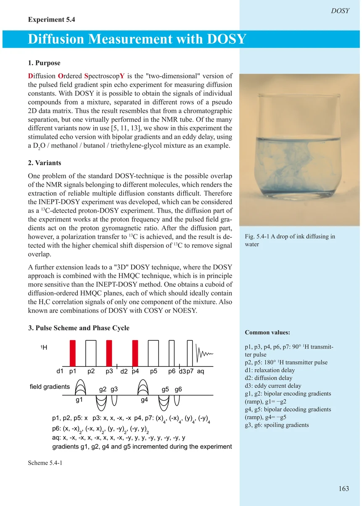
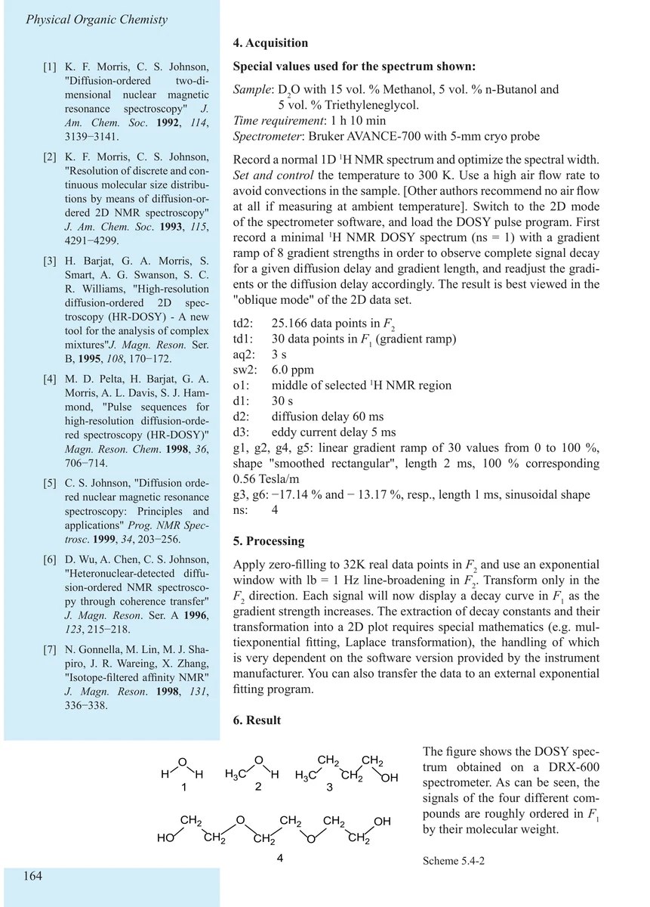
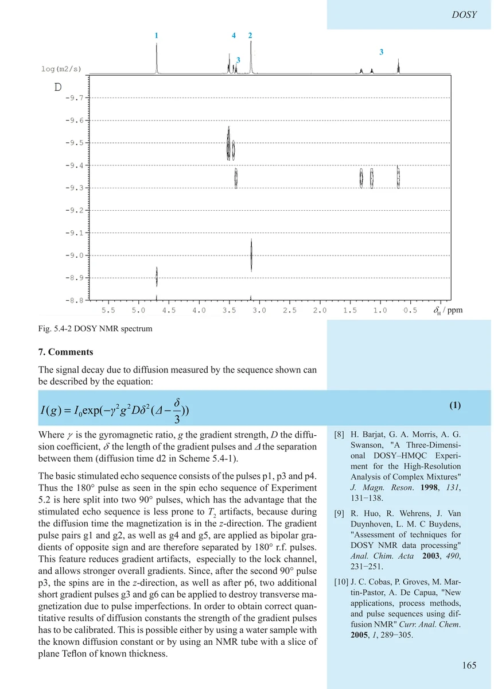
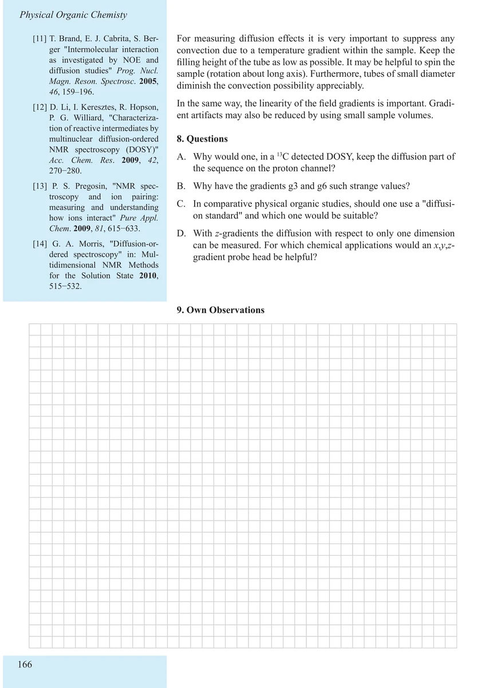

Item 5.4
Diffusion Measurement with DOSY
DOSY 扩散测量
PDF 173–176 · 原书 163–166 · Experiments in Physical Organic Chemistry




核磁共振实验方法、脉冲序列与谱图实践
Item 5.4
DOSY 扩散测量
PDF 173–176 · 原书 163–166 · Experiments in Physical Organic Chemistry



